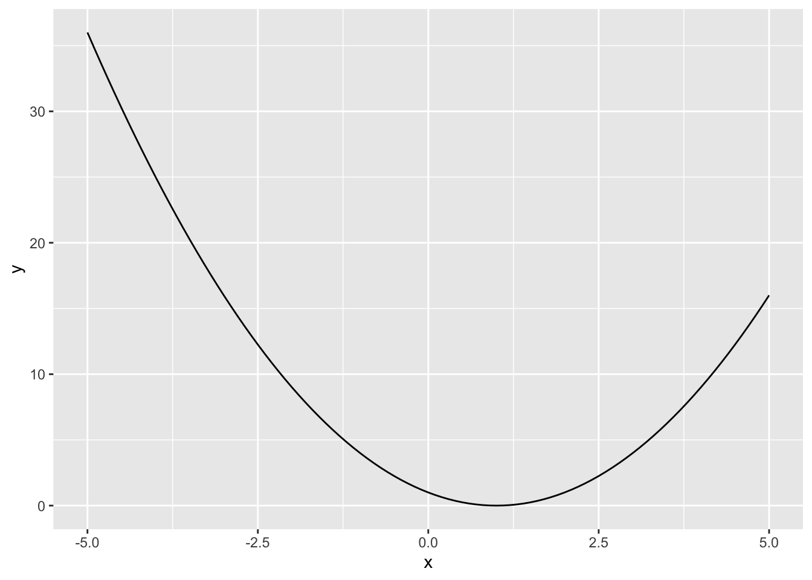
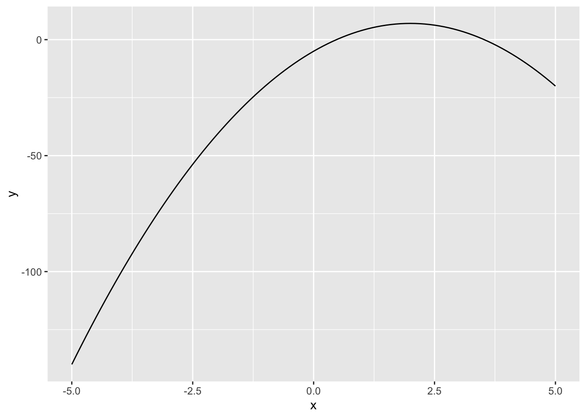
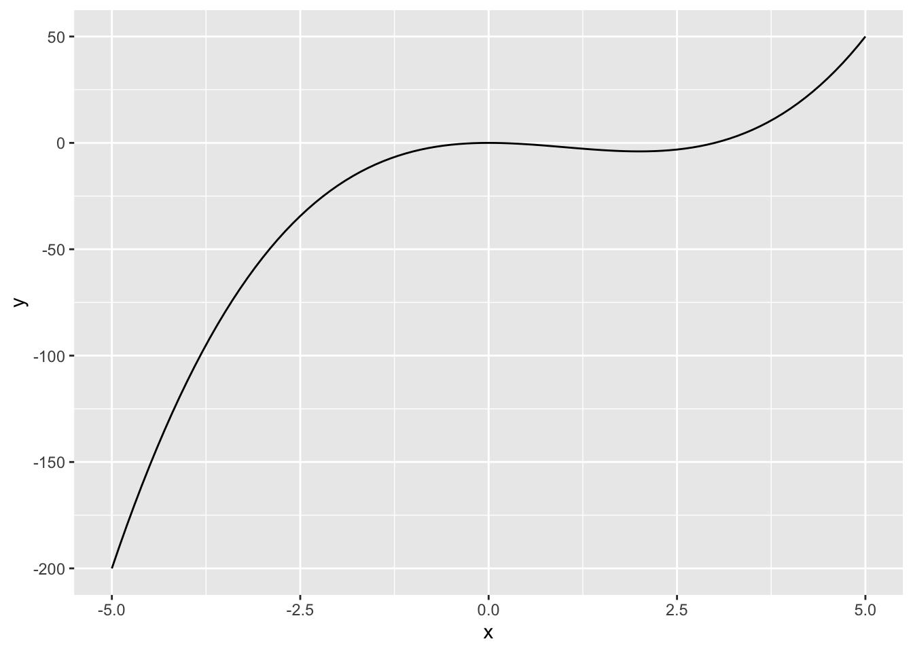

Last updated: 2022-12-03
Checks: 6 1
Knit directory: lasisi_stats/
This reproducible R Markdown analysis was created with workflowr (version 1.7.0). The Checks tab describes the reproducibility checks that were applied when the results were created. The Past versions tab lists the development history.
The R Markdown is untracked by Git. To know which version of the R
Markdown file created these results, you’ll want to first commit it to
the Git repo. If you’re still working on the analysis, you can ignore
this warning. When you’re finished, you can run
wflow_publish to commit the R Markdown file and build the
HTML.
Great job! The global environment was empty. Objects defined in the global environment can affect the analysis in your R Markdown file in unknown ways. For reproduciblity it’s best to always run the code in an empty environment.
The command set.seed(20211114) was run prior to running
the code in the R Markdown file. Setting a seed ensures that any results
that rely on randomness, e.g. subsampling or permutations, are
reproducible.
Great job! Recording the operating system, R version, and package versions is critical for reproducibility.
Nice! There were no cached chunks for this analysis, so you can be confident that you successfully produced the results during this run.
Great job! Using relative paths to the files within your workflowr project makes it easier to run your code on other machines.
Great! You are using Git for version control. Tracking code development and connecting the code version to the results is critical for reproducibility.
The results in this page were generated with repository version 6450f10. See the Past versions tab to see a history of the changes made to the R Markdown and HTML files.
Note that you need to be careful to ensure that all relevant files for
the analysis have been committed to Git prior to generating the results
(you can use wflow_publish or
wflow_git_commit). workflowr only checks the R Markdown
file, but you know if there are other scripts or data files that it
depends on. Below is the status of the Git repository when the results
were generated:
Ignored files:
Ignored: .Rhistory
Ignored: .Rproj.user/
Untracked files:
Untracked: analysis/appendixA.Rmd
Note that any generated files, e.g. HTML, png, CSS, etc., are not included in this status report because it is ok for generated content to have uncommitted changes.
There are no past versions. Publish this analysis with
wflow_publish() to start tracking its development.
library(tidyverse)── Attaching packages ─────────────────────────────────────── tidyverse 1.3.2 ──
✔ ggplot2 3.4.0 ✔ purrr 0.3.5
✔ tibble 3.1.8 ✔ dplyr 1.0.10
✔ tidyr 1.2.1 ✔ stringr 1.5.0
✔ readr 2.1.3 ✔ forcats 0.5.2
── Conflicts ────────────────────────────────────────── tidyverse_conflicts() ──
✖ dplyr::filter() masks stats::filter()
✖ dplyr::lag() masks stats::lag()library(Deriv)
library(Ryacas)
Attaching package: 'Ryacas'
The following object is masked from 'package:purrr':
simplify
The following object is masked from 'package:stats':
integrate
The following objects are masked from 'package:base':
%*%, diag, diag<-, lower.tri, upper.tri\[f(x) = x^2 - 2x + 1(=x2-2x + 1x^0)\]
# save function as var
fast <- "x^2 - 2*x + 1"
# save as expression
fa <- expression(x^2 - 2*x + 1)
# as R function
funa <- function(x){
x^2 - 2*x + 1
}plotfunc <- function(func){
ggplot(data.frame(x=c(-5,5)), aes(x = x)) +
stat_function(fun = func, geom = "line")
}plotfunc(funa)
# Find derivative
findDeriv <- function(exp){
exp %>%
y_fn("D(x)") %>%
yac_str()
}
prettyPrint <- function(func){
func %>%
y_fn("TeXForm") %>%
yac_str() %>%
paste0("$$", ., "$$")
}findDeriv(fa) %>%
prettyPrint()[1] “\[2 x - 2\]”
SolveZero <- function(func) {
findDeriv(func) %>%
yac_str() %>%
y_fn("Solve", "x") %>%
yac_str()
}SolveZero(fa)[1] "{x==1}"\[f(x) = -3x^2 + 12x - 5\]
# as expression in R
fbst <- "-3*x^2 + 12*x - 5"
fb <- expression(-3*x^2 + 12*x - 5)
# as R function
funb <- function(x){
-3*x^2 + 12*x - 5
}plotfunc(funb)
findDeriv(fb)%>%
prettyPrint()[1] “\[12 - 6 x\]”
SolveZero(fb)[1] "{x==2}"\[f(x) = x^3 - 3x^2\]
# as expression in R
fc <- expression(x^3-3*x^2)
# as R function
func <- function(x){
x^3-3*x^2
}plotfunc(func)
findDeriv(fc)%>%
prettyPrint()[1] “\[3 x ^{2} - 6 x\]”
SolveZero(fc)[1] "{x==0,x==2}"
sessionInfo()R version 4.2.2 (2022-10-31)
Platform: aarch64-apple-darwin20 (64-bit)
Running under: macOS Ventura 13.0.1
Matrix products: default
BLAS: /Library/Frameworks/R.framework/Versions/4.2-arm64/Resources/lib/libRblas.0.dylib
LAPACK: /Library/Frameworks/R.framework/Versions/4.2-arm64/Resources/lib/libRlapack.dylib
locale:
[1] en_US.UTF-8/en_US.UTF-8/en_US.UTF-8/C/en_US.UTF-8/en_US.UTF-8
attached base packages:
[1] stats graphics grDevices utils datasets methods base
other attached packages:
[1] Ryacas_1.1.3.1 Deriv_4.1.3 forcats_0.5.2 stringr_1.5.0
[5] dplyr_1.0.10 purrr_0.3.5 readr_2.1.3 tidyr_1.2.1
[9] tibble_3.1.8 ggplot2_3.4.0 tidyverse_1.3.2
loaded via a namespace (and not attached):
[1] Rcpp_1.0.9 lubridate_1.9.0 assertthat_0.2.1
[4] rprojroot_2.0.3 digest_0.6.30 utf8_1.2.2
[7] R6_2.5.1 cellranger_1.1.0 backports_1.4.1
[10] reprex_2.0.2 evaluate_0.18 highr_0.9
[13] httr_1.4.4 pillar_1.8.1 rlang_1.0.6
[16] googlesheets4_1.0.1 readxl_1.4.1 rstudioapi_0.14
[19] jquerylib_0.1.4 rmarkdown_2.18 labeling_0.4.2
[22] googledrive_2.0.0 munsell_0.5.0 broom_1.0.1
[25] compiler_4.2.2 httpuv_1.6.6 modelr_0.1.10
[28] xfun_0.35 pkgconfig_2.0.3 htmltools_0.5.3
[31] tidyselect_1.2.0 workflowr_1.7.0 fansi_1.0.3
[34] crayon_1.5.2 withr_2.5.0 tzdb_0.3.0
[37] dbplyr_2.2.1 later_1.3.0 grid_4.2.2
[40] jsonlite_1.8.3 gtable_0.3.1 lifecycle_1.0.3
[43] DBI_1.1.3 git2r_0.30.1 magrittr_2.0.3
[46] scales_1.2.1 cli_3.4.1 stringi_1.7.8
[49] cachem_1.0.6 farver_2.1.1 fs_1.5.2
[52] promises_1.2.0.1 xml2_1.3.3 bslib_0.4.1
[55] ellipsis_0.3.2 generics_0.1.3 vctrs_0.5.1
[58] tools_4.2.2 glue_1.6.2 hms_1.1.2
[61] pkgload_1.3.2 fastmap_1.1.0 yaml_2.3.6
[64] timechange_0.1.1 colorspace_2.0-3 gargle_1.2.1
[67] rvest_1.0.3 knitr_1.41 haven_2.5.1
[70] sass_0.4.4